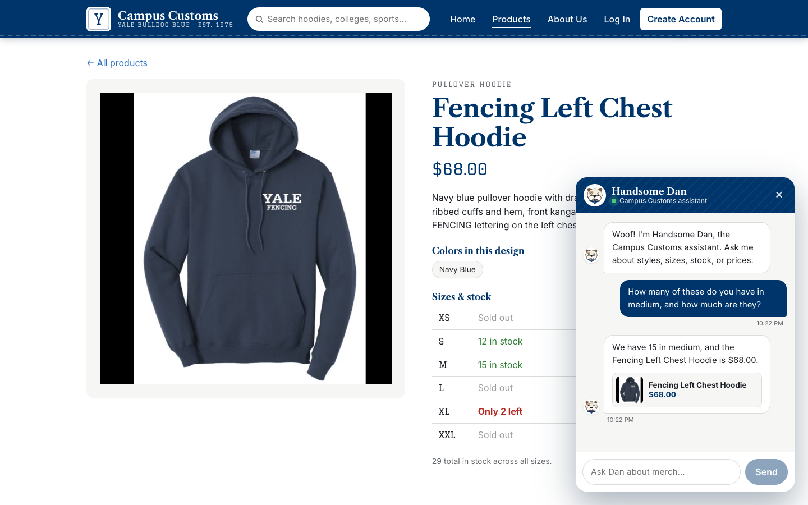
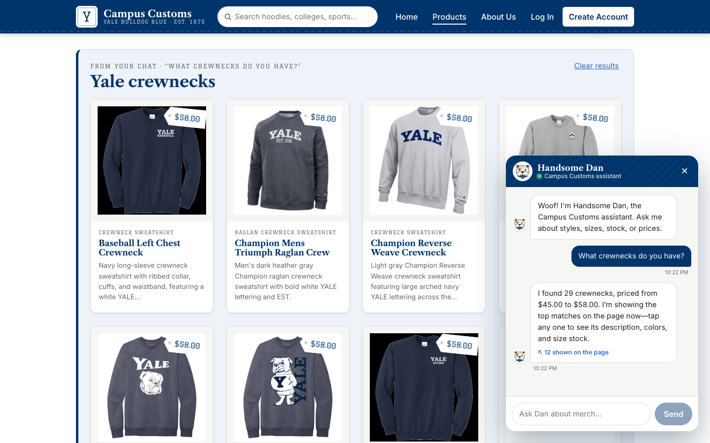
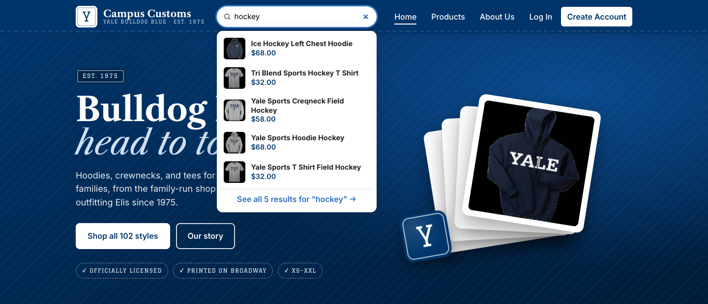

| 1. Chat checks the inventory level of an item | PASS |
| 2. Search result cards appear after a category question | PASS |
| 3. Usability feature (Problem 9, F1): live search bar | PASS |
1. Chat checks the inventory level of an item PASS

Evidence: what was asked, what the agent said, and the database check
Asked: How many of these do you have in medium, and how much are they?
Answer: We have 15 in medium, and the Fencing Left Chest Hoodie is $68.00.
Answer: We have 15 in medium, and the Fencing Left Chest Hoodie is $68.00.
Price in catalogue | $68.00 | PASS |
Stock in size M in inventory | 15 | PASS |
All sizes in inventory | XS=0, S=12, M=15, L=0, XL=2, XXL=0 | info |
SELECT price FROM catalogue WHERE product_id='fencing-left-chest-hoodie'; -- 68.0
SELECT quantity FROM inventory WHERE product_id='fencing-left-chest-hoodie' AND size='M'; -- 15
2. Search result cards appear after a category question PASS

Evidence: what was asked, what the agent said, and the database check
Asked: What crewnecks do you have?
Answer: I found 29 crewnecks, priced from $45.00 to $58.00. I’m showing the top matches on the page now—tap any one to see its description, colors, and size stock.
Answer: I found 29 crewnecks, priced from $45.00 to $58.00. I’m showing the top matches on the page now—tap any one to see its description, colors, and size stock.
| Cards put on the page | 12 | PASS |
Every card is really a crewneck (checked via /api/search?category=crewnecks) | yes | PASS |
| Crewnecks in the catalogue | 29 | info |
| Prices quoted in the reply are real (catalogue range $45.00–$58.00) | $45.00, $58.00 | PASS |
| Clicking a chat card opens its detail page | /products/baseball-left-chest-crewneck | PASS |
GET /api/search?category=crewnecks -- same engine the agent's find_products uses
SELECT MIN(price), MAX(price) ... crewnecks -- 45.0, 58.0
3. Usability feature (Problem 9, F1): live search bar PASS

Evidence: what was asked, what the agent said, and the database check
Asked: (typed in the search bar) hockey
Answer: Dropdown: 5 previews + “See all 5 results for “hockey” →”
Answer: Dropdown: 5 previews + “See all 5 results for “hockey” →”
| Results the search engine reports | 5 | info |
| “See all” count matches the engine | See all 5 results for “hockey” → | PASS |
| Products whose name or tags contain “hockey” (SQL) | 5 | PASS |
| Enter → Products grid shows | 5 cards | PASS |
SELECT COUNT(*) FROM catalogue WHERE lower(name || search_tags) LIKE '%hockey%'; -- 5